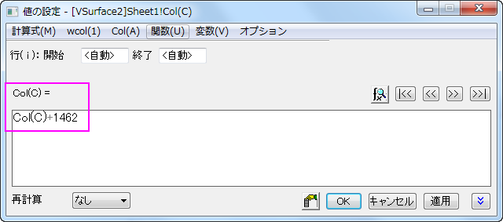

FAQ-283 日付データをExcelからOriginに変換するにはどのようにしたらよいでしょうか。
Date_Conversion_Origin_Excel
最終更新日:2016/09/20
Originが内部的に使用している日付と時間のデータは、天文暦のユリウス通日に基づいています。これは天文暦-4712年1月1日12時をグリニッジ平均時間を0としています。経度による時刻帯や、夏時間などによる時間シフトは行ないません。例えば、1998年6月11日21:23:01は、Originのユリウス日では、2450975.890984となります。
Excelは、1900 年から計算する日付システムと 1904 年から計算する日付システム の2つの日付をサポートしています。WindowsのExcelのデフォルトの日付システムは1900年から計算します。これは1900/01/01を数字の1としています。MacintoshのExcelのデフォルトの日付システムは1904年から計算します。これは1904年1月2日を数字の1としています。
下表は日付データの異なる形式をOriginに持ち込む方法です。
| Excelでのデータ形式(1900データシステム) |
1900/2/28あるいはそれ以前 |
1900/3/1あるいはそれ以降 |
| 数値 |
2415019 を追加 |
2415018 を追加 |
| テキスト |
変換の必要なし |
変換の必要なし |
| 日付 |
1 日追加 |
変換の必要なし |
| Excelでのデータ形式(1904データシステム) |
1904/03/01あるいはそれ以前 |
1904/03/02あるいはそれ以降 |
| 数値 |
2416480 を追加 |
2416480 を追加 |
| テキスト |
変換の必要なし |
変換の必要なし |
| 日付 |
4年と2日を追加 |
4年と1日を追加 |
| Note: この２つの変換理由は、Excelが実際には閏年ではないのに、1900年を閏年として数えているためです。 |
 |
1904年のシステムのExcelから日付形式で日付データをコピーしてOriginに貼りつけると、誤りがあります。正しくするためには、以下の２種類の方法があります。
1.Originでデータを修正する。
この場合、表に示されている年と日付を手動で追加するか、1462を日付データに加えます。1462を追加して、日付データを自動で修正する場合には、
-
| Note: Excelから貼り付ける前にOriginでデータ列のフォーマットを日付形式に設定すると、ステップ5とステップ6を省略することができます。 |
- 日付データの列を選択し、右クリックすると表示されるコンテキストメニューから列値の設定...を選択します。
- 値の設定ダイアログで以下のようにスクリプトを入力します。ここで、Cは列のショートネームです。
- 
- OKボタンをクリックして、日付データに1462を加え、テキスト&数値フォーマットにします。
- 日付データの列を再度選択し、右クリックすると表示されるコンテキストメニューからプロパティを選択します。
- 列のプロパティダイアログで、オプション項目にあるフォーマットのドロップダウンリストから、日付を選択して、
- OKボタンをクリックして、日付データを修正します。
2.Excelで日付システムを変更する
この場合、ファイル： Excelのメニューのオプションから、Excelオプションダイアログを開き、左のパネルから詳細を選択して、このワークブックを計算する場合にスクロールします。この場合、1904データシステムを使うのチェックを外して、データシステムを変更します。
|
キーワード: ユリウス通日, 数値日付, 日付の通し番号, Excel